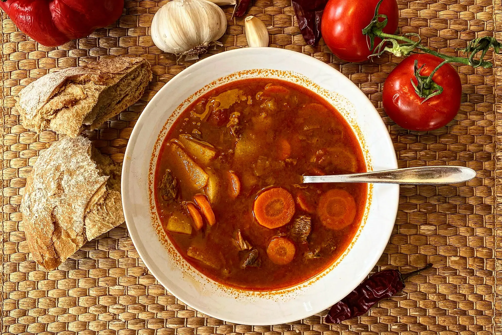

Goulash

Hungarian Goulash is a delicious beef stew (or soup) with a rich paprika seasoned broth. This delicious dish is
warm and comforting, perfect for a cold weather day.
Ingredients
- 1/3 cup of vegetable oil
- 3 sliced onions
- 2 tablespoons of Hungarian sweet paprika
- 3 teaspoons of salt, divided
- 1/2 teaspoon of ground black pepper
- 3 pounds of beef stew meat, cut into 1 1/2 inch cubes
- 1 1/2 cups of water
- 1 can of tomato paste
- 1 clove of garlic, minced
Steps
- Heat oil in a large pot or Dutch oven over medium heat. Cook and stir onions in oil until soft, 2 to 4
minutes. Remove onions and set them aside.
- Combine paprika, 2 teaspoons salt, and pepper in a medium bowl. Coat beef cubes in spice mixture, and cook
in the onion pot until brown on all sides.
- Return onions to the pot with beef; pour in water, tomato paste, garlic, and remaining 1 teaspoon salt.
Bring to a boil, then reduce heat to low. Cover and simmer, stirring occasionally, until meat is tender, 1
1/2 to 2 hours.